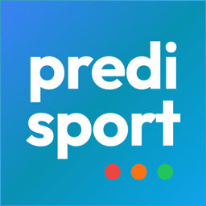

PredisportSi esce a pescare oggi?
Un verdetto chiaro per la tua zona, la marea giusta e lo spot riparato dal vento.
- Il momento giusto: marea, vento, onda e luna incrociati ora per ora, fino a 10 giorni prima.
- Lo spot giusto: ogni spot prende il suo colore in base al vento del giorno, relitti e punte compresi.
- Perché ha abboccato: ogni cattura conserva la sua marea, la sua ora e le sue condizioni.